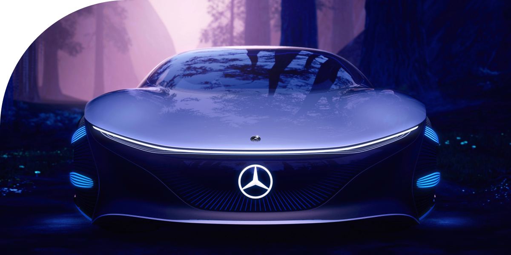
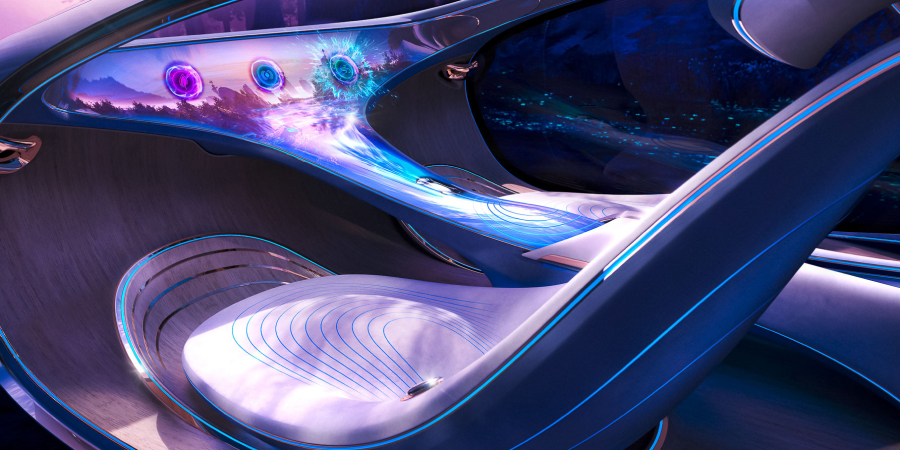
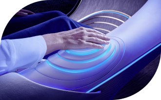

THE VISION AVTR
Inspered by the future
concept
Електромобільність у гармонії з людиною та природою. Екологічна технологія органічних акумуляторів та продумана операційна стратегія концепт-кара VISION AVTR.

PREMIER
На виставці CES 2020 було представлено новий концептуальний Mercedes-Benz – VISION AVTR. Футуристична концепція представленого електромобіля поєднує людину, природу та автомобіль унікальним чином.
Ола Калленіус, голова правління Daimler AG та Mercedes-Benz AG, у своєму виступі представив концепт-кар разом із лауреатом премії Оскар та творцем фільму Аватар, Джеймсом Кемероном.
Саме філософія, створена культовим режисером у фантастичному фільмі, стала основою створення VISION AVTR.


«Mercedes-Benz завжди був одним із найтехнологічніших преміальних брендів. Тепер настав час поєднати розкіш та екологічність. Адже тільки так ми можемо відповідати стандартам майбутнього».

Play videoINTERIOR & EXTERIOR
Дизайн VISION AVTR – втілення екологічності
Новаторська концепція VISION AVTR поєднує в собі екологічну взаємодію дизайну інтер'єру, екстер'єру та UX. Весь процес проектування був спрямований на конкретний результат – унікальний досвід взаємодії та сприйняття концепт-кара водієм та пасажирами. Йшлося про створення унікального простору, в якому пасажири мають біометричний зв'язок один з одним, з транспортним засобом та навколишнім світом.
Бічний зовнішній отвір проходить через внутрішню частину і створює нескінченну петлю, прототипом якої став священний зв'язок між народом На'ві у фільмі Аватар та їх природним середовищем проживання.

Коротким продовженням зовнішнього мінімалістичного дизайну є передні сидіння, виконані в дуже органічній формі, що нагадує листяні гамаки з планети Пандора. Центральна консоль символізує Древо Душ, найсвященніше місце На'ві. Блок управління – інтуїтивно зрозумілим та неймовірно функціональним.
